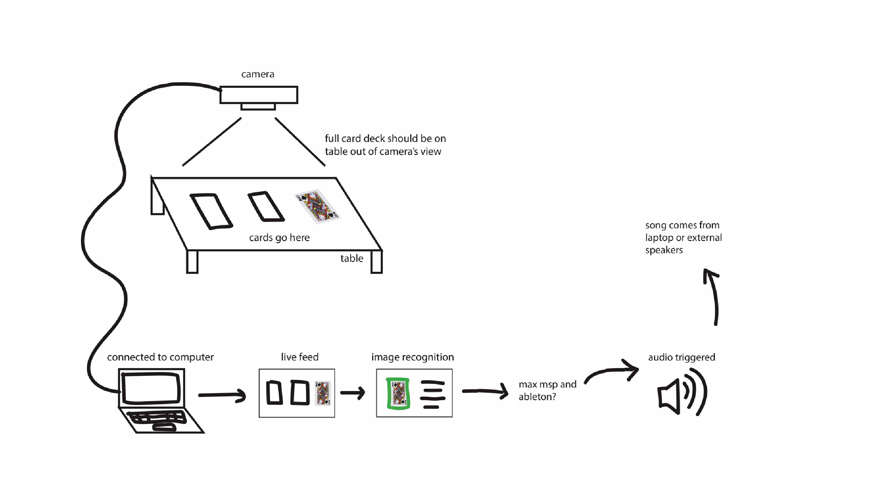
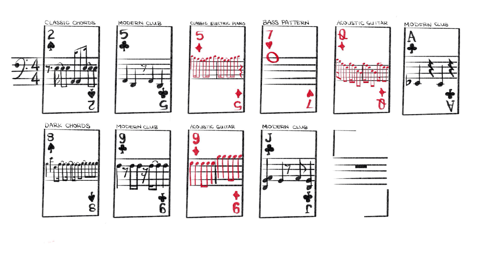

bailey foltz
bailey foltzmusical playing cards
An interactive music making experience
[ 2020 ]
background :
This program was created as a final assignment for a Designing Interfaces for Live Performances class.
For my final live performance integrating interfaces, I decided to use image recognition to create music, a simpler and more tactile version of music production software on which you might select pre-made looping beats and layer them.
Simplifying music creation to pre-recorded loops and allowing the user to trigger these loops with physical objects makes music creation a more playful and interactive experience. Using playing cards, which have a pre-existing set of symbols unassociated with musical beats, gives the user known tools while still providing unexpected outcomes.
audience :
The audience for this program is all users with all levels of experience in music creation, as no prior knowledge of production interfaces is required.
• I was inspired by beginner-friendly music production games, such as the Oskar Fischinger Google Doodle or DJ3K in Club Penguin, which give young or inexperienced users a simplified interface and allow them to layer different looping sounds. Other non-browser interfaces, like giant piano mats or the midi fighter, are also visually simplified ways to trigger sound with the press of a button.
• Using a more tactile interface that requires physical object manipulation increases the sense of physical control over the music, somewhat imitating the playing of an instrument but for a user with little musical experience.
• Average user interaction with this experience is projected to take 3-10 minutes.
process :
I started the process by learning to use Google’s teachable machine. Once I established the camera set-up that I use throughout the project, I took photos of different cards and hand positions that I would need the machine to recognize. Once categorized, this would let the program differentiate between different cards.
• Google's teachable machine is not perfect and would occasionally make errors due to limits of image recognition at the time and my own limits on training the program, but it was accurate enough to get mostly correct readings for this project. Most mistakes made by the program were not obvious and did not significantly impact user enjoyment.
• It should be noted that when I participate in this experience, there are less variables impacting the data (as the image recognition is only trained with me as a user). It may be less accurate for other users, who might place the cards down differently or whose hands look different etc.. In a wider reaching version of this program, using a diverse set of users for machine learning is crucial, but for this version the training was much more limited.
I imported my machine learning model into p5.js , an open-source Javascript library, so that I could trigger events based on the image readings.
Finally I created custom looping beats using GarageBand and Audacity. I created ten different 8 count loops to be imported into my p5 sketch. By placing the card face up on the table, the camera could determine which card you had chosen and play its corresponding musical loop, allowing for several loops to be layered on top of one another.
link to code